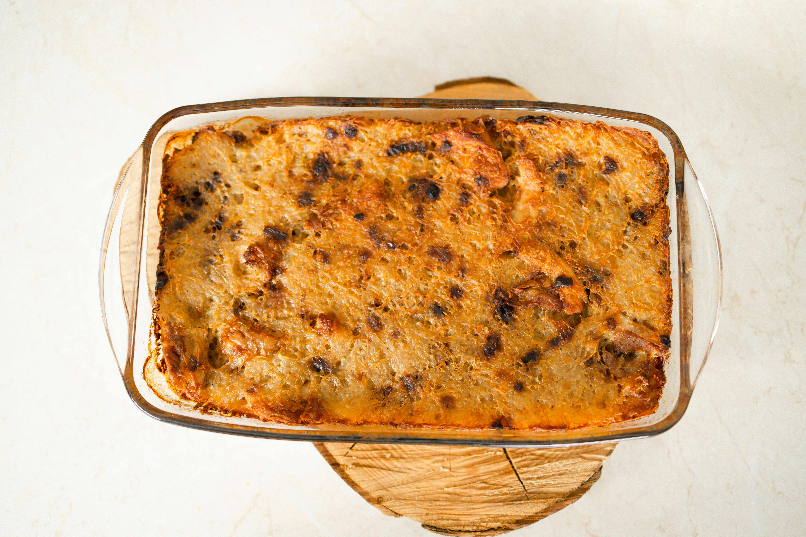

Bread Pudding

Description
This recipe is perfect for a thanksgiving dish. It makes use of dried out brioche bun cubes and and the leeks and mushroom are to die for.
This recipe can be made a couple of days ahead if you are short on time. It is a delicious dish everyone at the party is bound to fall in love with.
Ingredients
- 2 lb sturdy bread, cut into 1-inch cubes and dried.
- 2 lb mixed mushrooms, sliced.
- 3 large leeks, halved and sliced.
- 6 Tbsp butter + 2 Tbsp olive oil.
- 6 garlic cloves, minced.
- 2 Tbsp thyme leaves, 2 tbsp chopped sage.
- 1/2 dry sherry or white wine.
- 8 large eggs, 4 cups of whole milk, 2 cups heavy cream.
- 12 oz gruyere, 4 oz parmesan.
- 2 tsp kosher salt, 1 tsp black pepper, 1/4 tsp nutmeg.
- 1/4 cup chopped parsley.
Steps
- Dry the bread cubes (275°F for 20 minutes, or leave out overnight) and store.
- Heat butter and oil in your largest skillet over medium-high. Sauté the mushrooms in 3 batches until deeply golden, 6–8 minutes each. Don't crowd the pan. Set aside.
- Cook the leeks in the same pan with a pinch of salt until soft, 5–6 minutes. Add the garlic and herbs for 1 minute. Pour in the sherry and cook until it evaporates. Combine with the mushrooms and cool. Refrigerate.
- Whisk the eggs, milk, cream, salt, pepper, and nutmeg. In a very large bowl, toss the bread with the mushroom mixture, 2½ cups of the Gruyère, half the Parmesan, and the parsley. Pour the custard over and fold gently. Let it sit 10 minutes and fold again.
- Divide between two buttered 9x13 pans. Top with the remaining cheese. Cover tightly with foil and refrigerate overnight.
- Let sit at room temperature while the oven is busy. Bake at 350°F, covered, 30 minutes. Uncover and bake 25–30 minutes more until golden, puffed, and set in the center. Rest 10 minutes before serving.
Home